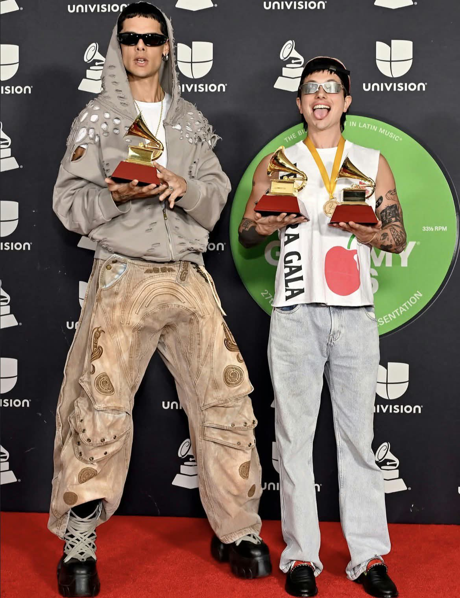

Una comunidad de más de 53.000 personas que sigue cada paso de CA7RIEL & Paco Amoroso.
Publicamos todos los días, con estética cuidada y datos verificados: lanzamientos, giras, premios y la historia del dúo. En los Latin Grammy 2026 cubrimos la noche en vivo y publicamos cada premio a los pocos minutos de anunciarse.
Datos de las estadísticas oficiales de Instagram de la cuenta. El promedio de «me gusta» toma las últimas 12 publicaciones.
| Publicación | Vistas | Me gusta |
|---|---|---|
| Interpretación de Música Electrónica | 49.263 | 3.707 |
| Video Musical Versión Larga | 46.248 | 3.549 |
| Canción Pop/Rock | 26.471 | 1.733 |
| Resumen de la noche (carrusel) | 12.067 | 632 |
Esa noche, 2.610 personas visitaron el perfil del fan club.
| 25 a 34 años | 31% |
| 35 a 44 años | 25% |
| 18 a 24 años | 16% |
| 45 a 54 años | 16% |
51% mujeres y 35% varones. La ciudad con más seguidores es Buenos Aires, seguida por Córdoba, Rosario y Mar del Plata. También llegamos a Santiago, Ciudad de México, Lima, Montevideo y Bogotá.
Escribinos por mensaje directo a @ca7rielypacoamorosoarg en Instagram.
Última actualización: sábado 14/11/2026 · 20:20 h